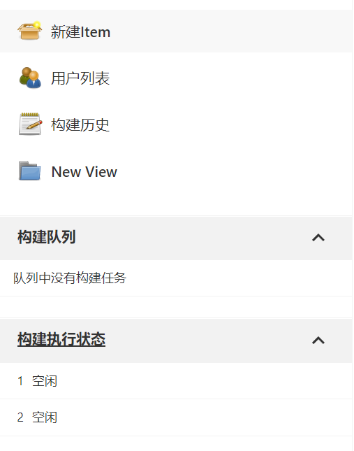
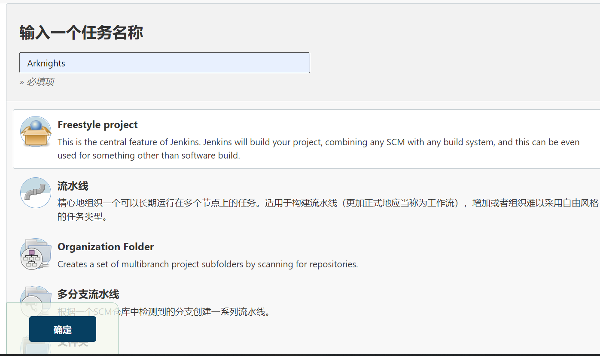
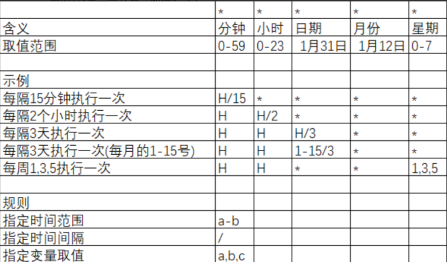
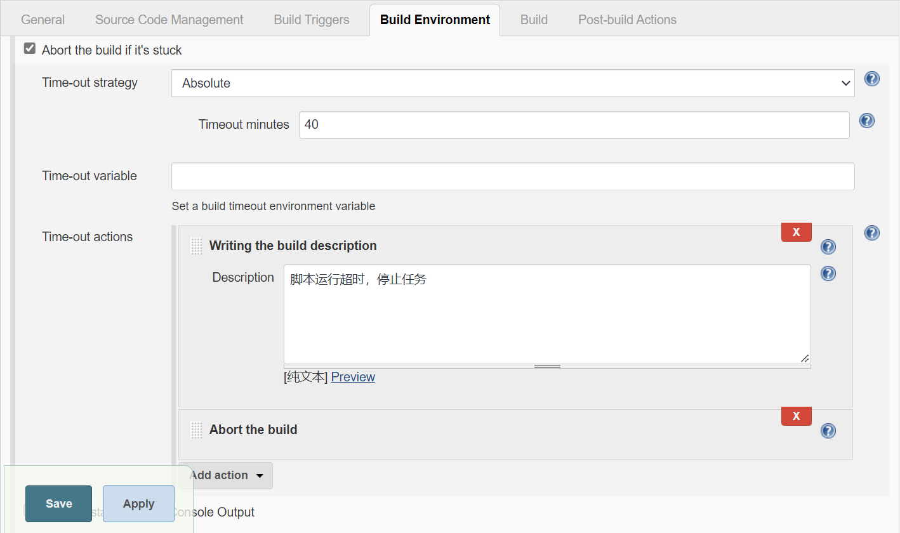

版本管理工具使用大全
版本管理是为满足不同需求，对同一产品或系统进行局部的改进 和改型所产生的产品或系统系列的变更情况进行记录、跟 踪、维护和控制的过程。
它的主要功能有：
集中管理档案，安全授权机制：档案集中地存放在服务器上，经系统管理员授权给各个用户。用户通过check in和check out的方式访问服务器上的文件，未经授权的用户则无法访问服务器上的文件。
软件版本升级管理：每次登入时，在服务器上都会生成新的版本，任何版本都可以随时检出编辑。
加锁功能：在文件更新时保护文件，避免不同的用户更改同一文件时发生冲突。
提供不同版本源程序的比较。
SVN
Subversion(SVN) 是一个开源的版本控制系統, 也就是说 Subversion 管理着随时间改变的数据。 这些数据放置在一个中央资料档案库(repository) 中。 这个档案库很像一个普通的文件服务器, 不过它会记住每一次文件的变动。 这样你就可以把档案恢复到旧的版本, 或是浏览文件的变动历史。
安装
windows
下载地址：下载 · TortoiseSVN
选好路径next即可
代码仓库提取到本地
- 右键使用
svn checkout - 在URL of repository中修改代码仓库地址，如：
http://192.168.3.1/project/xxxx；在checkout directory中修改提取到本地的位置 - 点击OK，并等待拉取成功
更新目录
本地更新到远程库中的最新文件
svn update提交操作
为服务器提交修改，并保存在服务器上
svn commitJenkins
Jenkins是一个独立的开源软件项目，是基于Java开发的一种持续集成工具，用于监控持续重复的工作，旨在提供一个开放易用的软件平台，使软件的持续集成变成可能。
前身是Hudson是一个可扩展的持续集成引擎。可用于自动化各种任务，如构建，测试和部署软件。Jenkins可以通过本机系统包Docker安装，甚至可以通过安装Java Runtime Environment的任何机器独立运行。
主要用于：
- 持续、自动地构建/测试软件项目，如CruiseControl与DamageControl。
- 监控一些定时执行的任务
搭建
Jenkins下载地址：Jenkins download and deployment
Windows—tomcat
- 在下载地址中找到Windows版本，下载到本地
- 搭建java环境，将java加入环境变量
- 安装选择下一步，在端口设置中改为8181后，下一步安装完毕即可
- 安装tomcat，将Jenkins.war复制一份到tomcat中的webapps中
- 修改tomcat中的server.xml，把tomcat端口修改为8181
- 运行bin中的startup.bat，在浏览器中输入localhost:8181即可打开jenkins
- 按照jenkins中的提示一步一步走即可
Windows—Jenkins
- 使用命令
net start jenkins开启服务 - 在浏览器中输入
localhost:8233开启jenkins（可在jenkins.xml修改端口）
Windows—java（推荐）
- 使用
java -jar jenkins.war即可运行（jenkins本身是由springboot开发，所以可以直接用java命令开启） - 在浏览器中输入localhost:8080即可打开jenkins
创建构建任务
点击新建Item

输入任务名并点击Freestyle project，完毕后点击确定

配置Source Code Management，这个地方用于获取git、svn中的代码，git就选择git，svn就选择Subversion
配置Build Triggers，用于定时执行任务
配置Build，Linux环境下在Build中选择执行Shell，Windows环境下选择执行Windows批处理命令（其他的也可，但是Shell命令是很普遍的，所以强烈推荐），然后输入Command，这样就可以让kenkins执行的时候执行该命令运行代码，参考如下：
#!/bin/bash -e
# 寻找miniconda3的sh，并激活conda环境
. $HOME/miniconda3/etc/profile.d/conda.sh
conda activate xxxxxx
cd ./src/main/
python -m main定时构建
语法：*
（五颗星，多个时间点，中间用逗号隔开）
第一个表示分钟，取值0~59
第二个表示小时，取值0~23
第三个表示一个月的第几天，取值1~31
第四个表示第几月，取值1~12
第五个表示一周中的第几天，取值0~7，其中0和7代表的都是周日

超时抛弃构建
在使用jenkins进行自动编译、构建时有些任务可能由于网络或其他原因一直阻塞，导致该项目不能再次执行编译构建。我们希望在某些任务执行时间超过一定值时将其终止。
jenkins的build timeout plugin插件可以帮我们完成该任务。jenkins的2.7.1版本默认就已经安装了该插件，如果默认没有安装可在插件管理中搜索进行安装。

本博客所有文章除特别声明外，均采用 CC BY-SA 4.0 协议 ，转载请注明出处！